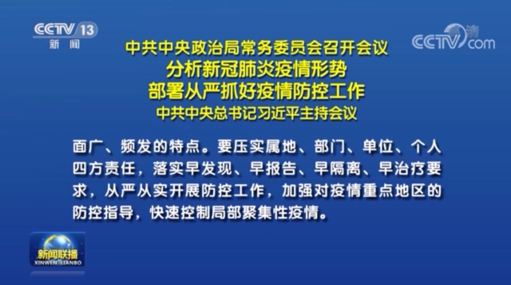
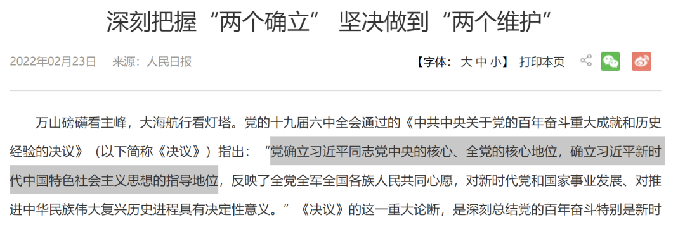
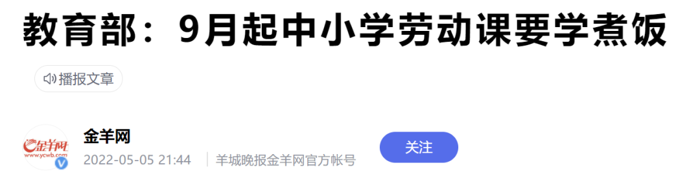
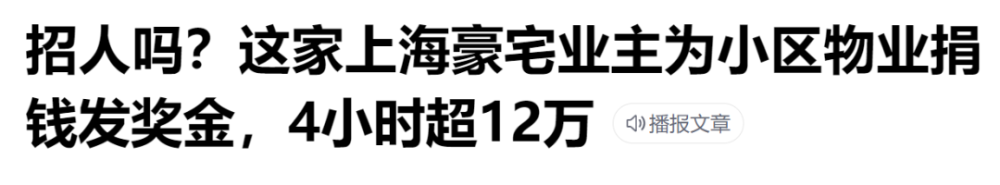

熊市跌还要啥理由
原创 V姐万事屋 V姐来了 2022-05-07 00:40
原文链接(长) 原文链接(短)
Hi, 我是V姐。
今天市场不好，结束四连阳。沪指跌2.16%，要说原因，熊市跌就跌了，要啥原因？
硬要说呢，主要受昨晚美股跳水的影响。
昨天晚上美股开盘就飞流直下，纳指一度跌6个点，道指和纳指昨天创下2年内最大跌幅。
有消息说是因为乌克兰的某钢铁厂抓住了大鱼，大鱼是某元首的DNA直系继承人。
这个有点阴谋论，目前也没法证实。
更可能的原因，还是加息过后，市场开始担心美股后面的基本面。
前天美联储加息50BP，算是市场预期范围内的。我们之前就提过，50BP的幅度市场已经提前消化了，所以算是利好，因此当晚美股是大涨的。
但是利好落地就是利空了。资金就要考虑后面持续加息，而且下一次加息伴随缩表的情况下，自己啥时候抢跑合适。事实证明，抢跑就是要快。
纳指里因为疫情大涨的一些科技股，包括线上会议，居家健身，电商类的，基本面肯定是下行的，外围对疫情不做管控，这些公司估值已经大幅回落。
英国央行，昨天也加息25个基点，而且喊话很鹰，说打算付出2年经济停滞的代价，来遏制通胀。
人民币汇率进一步贬值，今天一度接近6.7。我个人觉得汇率虽然还在贬值趋势里，但是快见底了。因为我们PMI数据4月是47.4，从2月50.2开始持续下滑,表明经济的一个整体景气度在下滑。
汇率跟PMI有很强的关联性。经济扩张，景气度高，资金更愿意留下来投资，反之就跑了。
4月上海停摆，整个长三角受上海影响，防控疫情，物流受阻，产业链断档，损失很大。
5月数据或许还是不理想，但是不会比4月差很多，经济基本面也好，股市也好，4,5月份就是磨底了。目前上海已经部分复工复产，苏州也全域低风险。所以汇率大概率会贬到6.8附近，就差不多了。
后面就是全力稳增长。很多朋友老是怀疑我们5.5%的决心和能力，还是对组织做事的节奏不了解。
昨天新闻联播用5分钟时间，讲解了中央政治局常委会会议的内容，专门重申防疫政策。
上海表态： **坚决打赢大上海保卫战**；
中央表态 **：坚决同一切歪曲、怀疑、否定我国防疫政策的言行做斗争。**

很多人说，啊这没有什么新鲜的呀，都是老生常谈的内容呀。
嗯，从内容上说是。但是这两个表态的场合很重要，发布的渠道很重要，这是对齐思想的重大信号。
对齐思想后，就是朝着目标狂奔。
今年是特殊的年份，必须稳中向好，所有手段都可以上。必须要确保已经确立的人事安排万无一失。内部不能有任何闪失。

很多人喜欢嘲笑人家大局党，但是实际上，你我的生活，无疑就是被大局深深影响。
大局不好，不稳，谁也好不了。
作为个体，可能很多人今年都受到了冲击。
关于生活，我也在思考，到底什么是最重要的，底线思维要有，street smart应该被重视，而不是被鄙视。
今天有一则新闻很有意思，教育部下发了新规，小学生9月要开始学煮饭。

我很赞同，这个属于很重要的生存技能。
经过这场封城，家中基本应急物资要常备。
紧急的求生技能也很重要，随着外部局势的复杂化，人的底线思维必须要有，真要动荡的时候，活下来比什么都重要。
再来说说street smart，也就是街头智慧。
大部分朋友，包括我，从小接受的是书本教育，1是1，2是2，眼里容不得沙子，大家按照规则办事。
这没错，这是文明时代，唯一的暴力机器秩序井然时的规则。
但是唯一的暴力机器一旦宕机，无论原来多么文明，瞬间回归丛林社会，个体会很惨，谁受益呢？
基层权力机关。
比如国外它的形式是黑手党，我们封建社会时是乡绅。
大家还记得3月上海疫情刚爆发时的一则新闻吗？

某豪宅业主们还没封城，就马上给物业团队发奖金。
很多朋友可能只当豪宅业主有钱心善，这就是不知道有钱人之所以有钱的原因。
人家反应之快，对于社会规则吃得透透的，知道特殊情况下，生活质量卡在谁手里。
后来大家发现，封闭后物资运送要靠物业，阳性楼管理要靠物业，快递进不进得来，一个保安就能卡脖子。
我知道一些小区，拼多多拼团，有的给卸货，有的不给卸，至于为啥，自行体会。
我们小区业主给物业保安保洁团队每人发了1000元奖金，我所在的楼栋，我们几个业主商量好，每周都给保安大哥花式送吃的。
或许不给，也不一定会被为难，但是我们觉得没必要冒险。
这需要教给孩子吗？
我认为需要。
我当然希望他们长大后的世界用不上这些，但是也希望他们万一遭遇恶劣环境，能够知道生存的另一套法则，而不是饿着肚子，空谈道德。